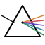

<!doctype html>
<html lang="en">
<head>
<meta charset="utf-8"/>
<title>Prism — daily brief</title>
<link rel="icon" type="image/svg+xml" href="../../assets/prism-mark.svg"/>
<link rel="stylesheet" href="app.css"/>

<script src="https://unpkg.com/react@18.3.1/umd/react.development.js" integrity="sha384-hD6/rw4ppMLGNu3tX5cjIb+uRZ7UkRJ6BPkLpg4hAu/6onKUg4lLsHAs9EBPT82L" crossorigin="anonymous"></script>
<script src="https://unpkg.com/react-dom@18.3.1/umd/react-dom.development.js" integrity="sha384-u6aeetuaXnQ38mYT8rp6sbXaQe3NL9t+IBXmnYxwkUI2Hw4bsp2Wvmx4yRQF1uAm" crossorigin="anonymous"></script>
<script src="https://unpkg.com/@babel/standalone@7.29.0/babel.min.js" integrity="sha384-m08KidiNqLdpJqLq95G/LEi8Qvjl/xUYll3QILypMoQ65QorJ9Lvtp2RXYGBFj1y" crossorigin="anonymous"></script>
</head>
<body>
<div id="root"></div>

<script type="text/babel" src="Icons.jsx"></script>

<script type="text/babel">
const { useState } = React;
const { Icon, ThumbsIcon } = window;

// Lens metadata
const LENSES = [
  { id: 'founder',    name: 'Founder',    color: 'var(--lens-founder)',    ink: 'var(--lens-founder-ink)' },
  { id: 'engineer',   name: 'Engineer',   color: 'var(--lens-engineer)',   ink: 'var(--lens-engineer-ink)' },
  { id: 'researcher', name: 'Researcher', color: 'var(--lens-researcher)', ink: 'var(--lens-researcher-ink)' },
];

const BRIEFS = [
  {
    id: 'b1', lens: 'founder',
    title: 'Anthropic raised $13B at $183B post — three signals for B2B fintech',
    lead: "The deck's go-to-market section mentions India explicitly. Enterprise revenue mix is shifting toward $1M+ contracts. The round closed in nine days.",
    why: "Your thesis is on agentic workflows for SMB payroll. The pricing data point sets a ceiling on what your customers will tolerate from upstream LLM costs — and the GTM hint suggests Anthropic will compete for your distribution.",
    source_count: 12, read_min: 4,
    sources: ['information.com', 'anthropic.com/news', 'theinformation.com', 'pitchbook.com'],
    claims: [
      { n: 1, text: 'Round closed in <em>nine days</em>, oversubscribed at $183B post-money.', src: 'theinformation.com · funding desk · ¶3' },
      { n: 2, text: 'Enterprise revenue mix shifted toward $1M+ contracts (now ~40% of ARR).', src: 'anthropic.com · investor letter · ¶7' },
      { n: 3, text: 'India go-to-market named in the deck — first time on record.', src: 'theinformation.com · slide 14' },
    ],
  },
  {
    id: 'b2', lens: 'engineer',
    title: 'Speculative decoding gets a 200-line reference implementation',
    lead: "It's small enough to read in a sitting. The trick is the rejection-sampling math, not the throughput numbers — those depend entirely on draft-model quality.",
    why: "You're going deep on agentic systems where latency dominates UX. This is the cleanest writeup of the technique to date, and worth understanding before you decide whether to bake it in.",
    source_count: 8, read_min: 6,
    sources: ['github.com/karpathy', 'news.ycombinator.com', 'arxiv.org/abs/2503'],
    claims: [
      { n: 1, text: '200-line PyTorch reference — runs on a single 3090.', src: 'github.com/karpathy · README' },
      { n: 2, text: 'Throughput gain caps at ~2.4× and falls off sharply with poor draft models.', src: 'arxiv.org/abs/2503 · table 4' },
      { n: 3, text: 'Open question: <em>does the gain hold under structured outputs?</em>', src: 'r/MachineLearning · top comment' },
    ],
  },
  {
    id: 'b3', lens: 'researcher',
    title: 'CHI papers converge on interaction-first accessibility',
    lead: "Three papers this week land on the same insight: traditional WCAG is necessary but not sufficient. The new question is interaction grammar, not contrast ratio.",
    why: "You're exploring assistive HCI. The convergence between teams that don't cite each other yet is signal — there's a synthesis paper waiting to be written.",
    source_count: 4, read_min: 8,
    sources: ['arxiv.org', 'dl.acm.org/chi', 'a11ymatters.org'],
    claims: [
      { n: 1, text: 'CMU and UW independently propose "interaction-first" accessibility frameworks.', src: 'arxiv.org/abs/2502.10934' },
      { n: 2, text: 'Both treat screen-reader users as the primary persona, not an accommodation.', src: 'dl.acm.org/chi/2026/14' },
      { n: 3, text: 'Neither paper cites the other (yet). <em>Probably will by ASSETS.</em>', src: 'analysis' },
    ],
  },
  {
    id: 'b4', lens: 'founder',
    title: 'Razorpay and PhonePe both shipped agent SDKs this week',
    lead: "Two of India's three largest payments players now publish agent-callable APIs. The third has the docs in draft.",
    why: "Your moat assumption was that integration friction protected you. That moat just got narrower — and the smart move is to be on top of these SDKs before your customers ask.",
    source_count: 6, read_min: 3,
    sources: ['razorpay.com/blog', 'phonepe.com/dev', 'inc42.com'],
    claims: [],
  },
  {
    id: 'b5', lens: 'engineer',
    title: 'PyTorch 2.6 lands — torch.compile cache survives across processes',
    lead: "The headline number is a 3× cold-start improvement in their benchmark. The real story is that the cache is now portable between machines.",
    why: "If you're building an inference service with autoscaling, this changes your warm-up math. Worth a half-day spike to measure on your model.",
    source_count: 5, read_min: 2,
    sources: ['pytorch.org/blog', 'github.com/pytorch'],
    claims: [],
  },
];

function TopStrip() {
  return (
    <div className="topstrip">
      <a href="#" className="topstrip-brand">
        
        <span className="topstrip-brand-text">Prism</span>
      </a>
      <div className="topstrip-actions">
        <span className="kbd-strip">⌘K</span>
        <button className="icon-btn" title="Refresh">
          <Icon name="sparkle" size={15}/>
        </button>
        <button className="icon-btn" title="Settings">
          <Icon name="sliders" size={15}/>
        </button>
      </div>
    </div>
  );
}

function timeOfDay() {
  const h = new Date().getHours();
  if (h >= 5  && h < 11) return { period: 'morning',   theme: 'time-morning',   refresh: '06:00' };
  if (h >= 11 && h < 14) return { period: 'midday',    theme: 'time-midday',    refresh: '12:00' };
  if (h >= 14 && h < 18) return { period: 'afternoon', theme: 'time-afternoon', refresh: '12:00' };
  if (h >= 18 && h < 22) return { period: 'evening',   theme: 'time-evening',   refresh: '18:00' };
  return { period: 'night', theme: 'time-night', refresh: 'still 06:00' };
}

function BriefHeader() {
  const total = BRIEFS.length;
  const sources = BRIEFS.reduce((s,b) => s + b.source_count, 0);
  const mins = BRIEFS.reduce((s,b) => s + b.read_min, 0);
  const { period, refresh } = timeOfDay();
  const dateLabel = new Date().toLocaleDateString('en-GB', { weekday: 'long', day: 'numeric', month: 'long' }).toUpperCase();

  return (
    <div className="brief-header">
      <div className="brief-header-bar"/>
      <div className="brief-header-inner">
        <div className="brief-header-date">
          <span className="pulse"/>
          {dateLabel} · REFRESHED {refresh}
        </div>
        <h1 className="brief-header-h">The {period}, <em>refracted.</em></h1>
        <div className="brief-header-stats-inline">
          <span><b>{total}</b>briefs</span>
          <span><b>{sources}</b>sources merged</span>
          <span><b>{mins}m</b>to read</span>
        </div>
      </div>
    </div>
  );
}

function LensSwitcher({ active, onChange }) {
  const counts = { all: BRIEFS.length };
  LENSES.forEach(l => { counts[l.id] = BRIEFS.filter(b => b.lens === l.id).length; });
  return (
    <div className="lens-switcher">
      <button
        className={`lens-pill ${active === 'all' ? 'is-active' : ''}`}
        onClick={() => onChange('all')}
      >All <span className="lens-pill-count">· {counts.all}</span></button>
      {LENSES.map(l => (
        <button
          key={l.id}
          className={`lens-pill ${active === l.id ? 'is-active' : ''}`}
          onClick={() => onChange(l.id)}
        >
          <span className="lens-pill-dot" style={{ background: l.color }}/>
          {l.name}
          <span className="lens-pill-count">· {counts[l.id] || 0}</span>
        </button>
      ))}
    </div>
  );
}

function Brief({ brief, isOpen, onToggle }) {
  const lens = LENSES.find(l => l.id === brief.lens);
  const [state, setState] = useState({});
  const set = k => e => { e.stopPropagation(); setState(s => ({ ...s, [k]: !s[k] })); };

  return (
    <article className={`brief ${isOpen ? 'is-open' : ''}`}>
      <div className="brief-accent" style={{ background: lens.color }}/>

      <div style={{ display: 'flex', alignItems: 'center', justifyContent: 'space-between', gap: 12 }}>
        <div className="brief-eyebrow" style={{ color: lens.ink }}>
          <span className="brief-eyebrow-dot" style={{ background: lens.color }}/>
          {lens.name} lens
        </div>
        <div className="brief-meta">{brief.source_count} sources · {brief.read_min} min</div>
      </div>

      <h2 className="brief-title" onClick={() => onToggle(brief.id)}>{brief.title}</h2>
      <p className="brief-lead">{brief.lead}</p>
      <p className="brief-why">
        <span className="brief-why-label">Why this is in your brief</span>
        {brief.why}
      </p>

      <div className="brief-footer">
        <div className="brief-sources">
          {brief.sources.slice(0, 3).map((s, i) => <a key={i}>{s}</a>)}
          {brief.sources.length > 3 && <span>+ {brief.sources.length - 3} more</span>}
        </div>
        <div className="fbrow">
          <button className={`fb-btn ${state.up ? 'is-on' : ''}`} onClick={set('up')} title="Sharp signal">
            <ThumbsIcon direction="up"/>
          </button>
          <button className={`fb-btn ${state.down ? 'is-on' : ''}`} onClick={set('down')} title="Noise">
            <ThumbsIcon direction="down"/>
          </button>
          <button className={`fb-btn ${state.save ? 'is-on' : ''}`} onClick={set('save')} title="Save">
            <Icon name="bookmark" size={14}/>
          </button>
        </div>
      </div>

      {isOpen && brief.claims?.length > 0 && (
        <div className="brief-expand">
          <div className="claims-label">Claims · verified across {brief.source_count} sources</div>
          {brief.claims.map(c => (
            <div className="claim" key={c.n}>
              <div className="claim-n">{String(c.n).padStart(2,'0')}</div>
              <div>
                <div className="claim-text" dangerouslySetInnerHTML={{ __html: c.text }}/>
                <div className="cite"><a>{c.src}</a></div>
              </div>
            </div>
          ))}
        </div>
      )}
    </article>
  );
}

function App() {
  const [lens, setLens] = useState('all');
  const [openId, setOpenId] = useState(null);

  const themes = [
    { id: 'auto',           name: 'Auto · by time', swatch: '#E8DEB6' },
    { id: 'time-sand',      name: 'Sand',           swatch: '#FAF7F2' },
    { id: 'time-morning',   name: 'Butter',         swatch: '#FAF4DE' },
    { id: 'time-midday',    name: 'Sky',            swatch: '#ECF0F4' },
    { id: 'time-afternoon', name: 'Sage',           swatch: '#F0F2E8' },
    { id: 'time-evening',   name: 'Terracotta',     swatch: '#F5EBE2' },
    { id: 'time-night',     name: 'Linen',          swatch: '#F1E8DC' },
  ];
  const [theme, setTheme] = useState('auto');

  React.useEffect(() => {
    const applied = theme === 'auto' ? timeOfDay().theme : theme;
    document.body.className = applied;
  }, [theme]);

  const visible = lens === 'all' ? BRIEFS : BRIEFS.filter(b => b.lens === lens);
  const onToggle = id => setOpenId(prev => prev === id ? null : id);

  return (
    <div className="page">
      <TopStrip/>
      <div className="palette-picker">
        <span className="palette-picker-label">Paper</span>
        {themes.map(t => (
          <button
            key={t.id}
            className={`palette-chip ${theme === t.id ? 'is-active' : ''}`}
            onClick={() => setTheme(t.id)}
          >
            <span className="palette-chip-swatch" style={{ background: t.swatch }}/>
            {t.name}
          </button>
        ))}
      </div>
      <BriefHeader/>
      <LensSwitcher active={lens} onChange={setLens}/>
      {visible.map(b => (
        <Brief key={b.id} brief={b} isOpen={openId === b.id} onToggle={onToggle}/>
      ))}
      <div className="endnote">
        That's the morning. <a>3 sources auto-muted this week</a>.
      </div>
    </div>
  );
}

ReactDOM.createRoot(document.getElementById('root')).render(<App/>);
</script>
</body>
</html>
